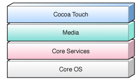
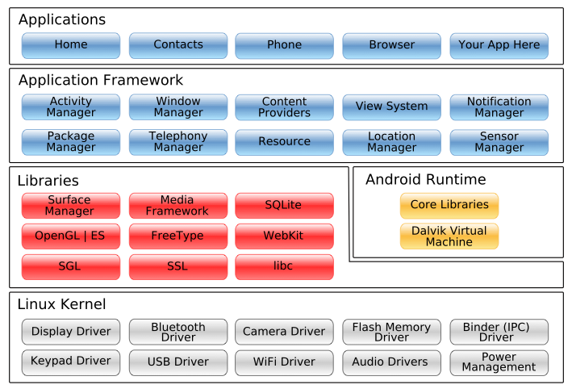

Jason Urton
HW #2
A comparison of Android and iPhone architectures
First, I will provide a brief description of the Android and iOS operating system architectures, which will be followed by a description of their similarities and differences.
The Android operating system is built on top of the Linux kernel, which is uses for memory management, process management, networking, and certain other services. On top of the kernel is a set of native libraries written in C/C++ which enable functionality such as improved window management, graphics rendering, media playback, and SQL connectivity, among other things. Above this sits the Android Runtime, which includes the “Dalvik” virtual machine (VM) as well as a number of core libraries. The Dalvik VM is an implementation of Java meant specifically for mobile devices. Next comes the Application Framework, which includes basic components that enable application functionality. Finally, the top layer is the Applications layer, which includes the applications that actually make up the customer-facing user interface for Android.

The lowest level of the iOS operating system is the Core OS layer, and encompasses Apple’s Darwin kernel as well as a set of additional low-level features upon which the rest of the technologies rest. The next level is Core Services, which includes a number of fundamental system services (like SQL or XML support for example) that most applications use. On top of the Core Services layer is the Media layer, which contains graphics, audio, and video technologies that facilitate the creation of application activities. Next is the Cocoa Touch layer, which acts as the key framework for the creation of iOS applications. Finally, iOS applications themselves are the top layer of the stack.

Based upon the descriptions given, it is clear that the architecture for the Android and iOS operating systems are different is some ways, but are overall quite similar. The following chart lays out the fundamental functionality associated with each layer:
Layer | Function | Android | iOS |
Application | Customer interface | Application | Application |
Application Framework | Basic components that enable application functionality | Application Framework | Cocoa Touch |
Media | Graphics, audio, video technologies | ? | Media |
Runtime | VM and core libraries | Android Runtime | ? |
Libraries | Set of system services | Libraries | Core Services |
Kernel | Basic low-level functionality | Linux | Darwin |
Each of these layers represents increasing levels of abstraction from the fundamental building blocks involved in any computer-based platform. Both of the models (Android and iOS) are clearly designed to facilitate the creation of applications for developers by providing abstracted layers of functionality that serve to mask complexity and make it simple to interact with basic system processes and resources.
Sources:
Hello World Tutorial
Screencast:
http://www.youtube.com/watch?v=GVraVO5fPTM
Code:
https://github.com/urtonj/HelloAndroid_2
API Review
asa